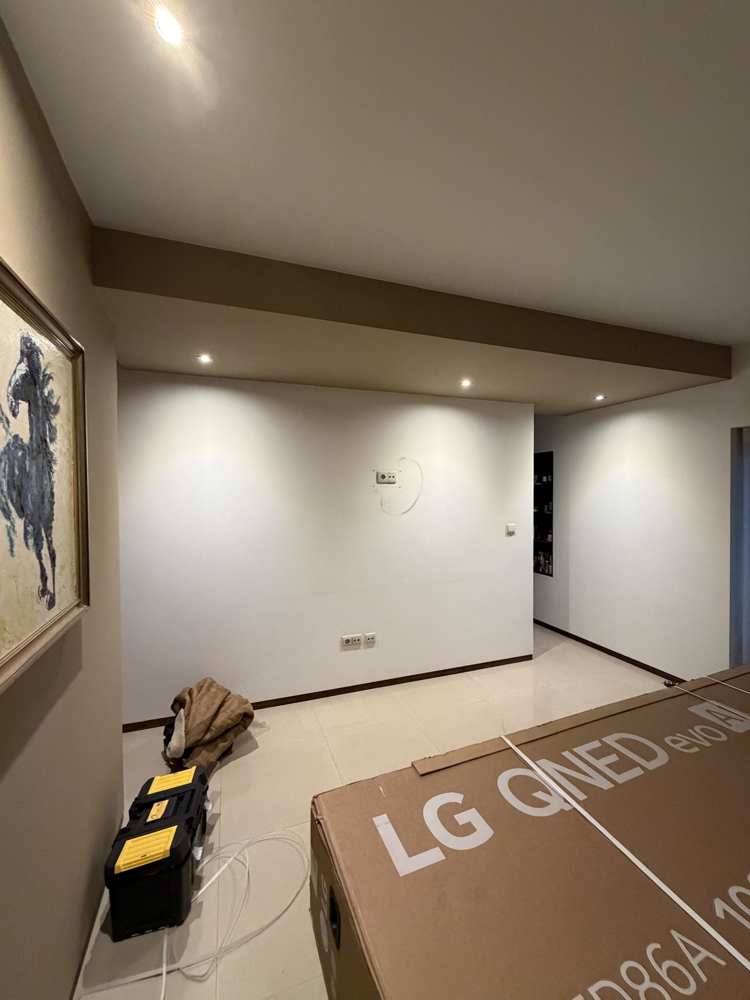
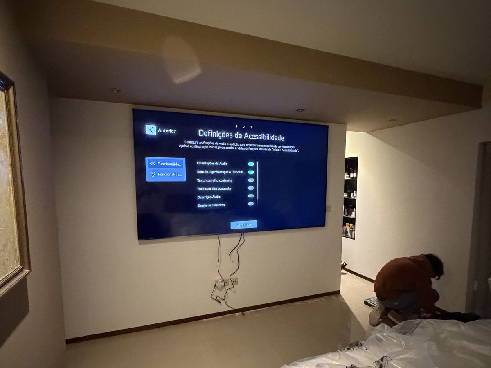
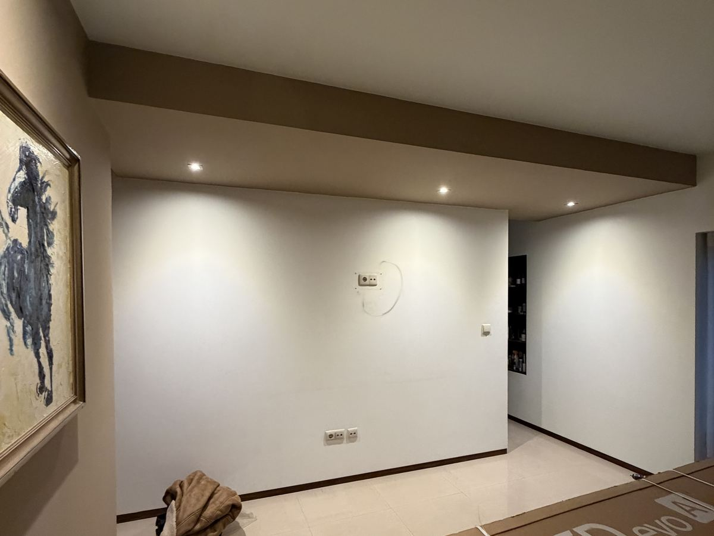

Do quadro à cozinha, fica bem feito.
Eletricidade, carpintaria, telecomunicações e domótica — e tudo o que uma casa ou um espaço precisa em obra técnica. Um interlocutor, trabalho certificado, resposta em menos de 24 horas.

OBRA · MATOSINHOS Iluminação embutida + tomadas · sala T4O que fazemos
Não é só uma coisa. A Dizarro trata a parte técnica de uma casa ou espaço de ponta a ponta — e coordena as áreas entre si, para não andar atrás de três empresas diferentes.
Eletricidade
- Instalações novas e remodelações de quadro
- Diagnóstico e reparação de avarias
- Tomadas, circuitos e iluminação interior/exterior
- Pré-instalação de carregador de veículo elétrico
Telecomunicações & Redes
- Videovigilância (CCTV) e sistemas de alarme
- Redes estruturadas e Wi-Fi por zonas
- Fibra ótica, controlo de acessos, videoporteiro IP
- Certificação ITED / ITUR
Carpintaria
- Móveis à medida, roupeiros embutidos, cozinhas
- Soalhos, rodapés e revestimentos
- Portas e janelas em madeira
- Decks, pérgulas e estruturas exteriores · restauro
Domótica & automação
- Iluminação e estores inteligentes
- Cenários (dia, noite, fora de casa) configurados no local
- Integração com os interruptores que já tem
- Sensores, termostatos e fecho de portões por app

Pedir orçamento é rápido
Sem formulários intermináveis. Diga o que precisa, respondemos em menos de 24 horas úteis, e o orçamento é gratuito e sem compromisso.
Conta-nos
Uma mensagem por WhatsApp ou uma chamada. Fotos ajudam, mas não são obrigatórias.
Vistoria
Se o trabalho justificar, marcamos uma visita técnica para medir e perceber o contexto.
Proposta clara
Recebe um orçamento discriminado — materiais, mão de obra e prazo. Sem surpresas na fatura.
Trabalhos recentes
Obras reais da Dizarro na região do Porto. Ver todos os trabalhos →

Telecom Redes
Redes
Eletricidade Carpintaria
Carpintaria Domótica
DomóticaOnde trabalhamos
Base em Padrão da Légua, Matosinhos. Deslocamo-nos num raio de cerca de 100 km — toda a Área Metropolitana do Porto, mais Braga e Aveiro.
- Sede Padrão da Légua, Matosinhos, Porto
- Coord 41.195° N · 8.711° W
- Raio ≈ 100 km (Porto · Braga · Aveiro)
- Urgências dentro da Área Metropolitana do Porto
O que dizem os clientes
★★★★★Profissional e muito rápido. Veio no mesmo dia trocar a iluminação e ainda me ajudou a configurar tudo no Apple Home. Recomendo a toda a gente.
Nik V. — Vila do Conde · Eletricidade
★★★★★Educado, transparente e rápido. Trocou todos os cabos de TV antigos dentro da parede por cabo de rede para todas as divisões. Recomendo muito.
Eduardo D. — Aveiro · Telecomunicações
★★★★★Percebeu o problema num instante e trouxe todo o material. No fim disse que era só ligar se algo não ficasse bem. Profissionais assim são raros.
Frederico S. — Vila do Conde · Carpintaria
Perguntas frequentes
O orçamento tem algum custo?
Não. É gratuito e sem compromisso, seja pelo WhatsApp, e-mail ou numa visita técnica quando o trabalho justifica.
Dão garantia?
Sim. Em regra, 12 meses em instalações e 6 meses em reparações. Se algo não ficar bem dentro do prazo, voltamos sem custo.
Trabalham com particulares e empresas?
Ambos. Temos obra residencial, comercial e industrial, de pequenas intervenções a projetos completos.
Como posso pagar?
Transferência bancária, MB Way e numerário. Em obras maiores é comum faseiar: sinal, durante a obra e conclusão.